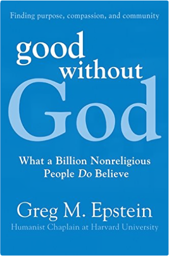
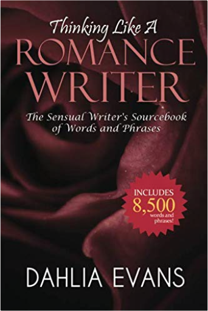
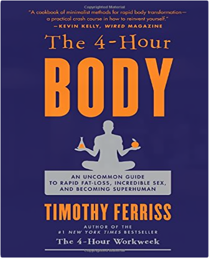
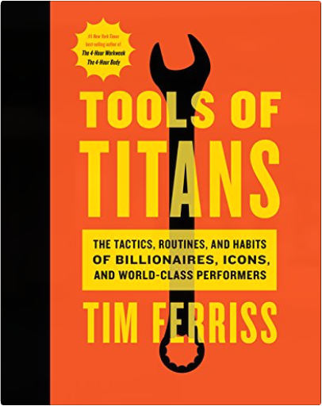
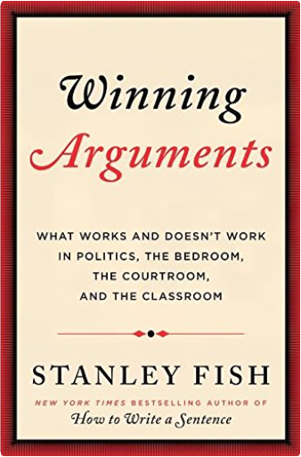
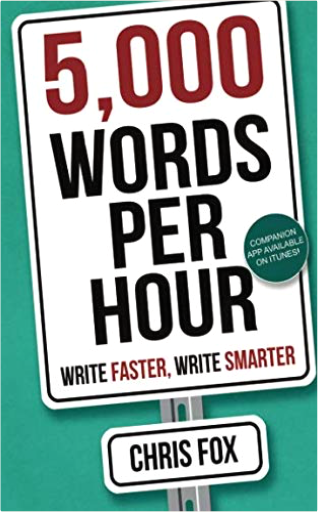
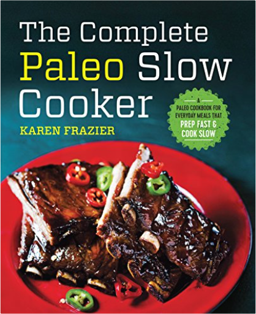
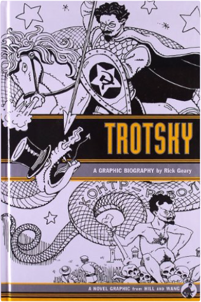
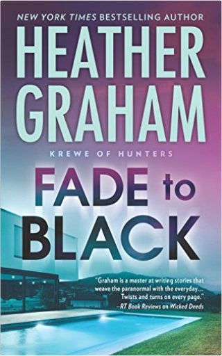

 Good Without God: What a Billion Nonreligious People Do BelieveGreg Epstein A provocative and positive response to Christopher Hitchens, Sam Harris, Richard Dawkins, and other New Atheists, Good Without God makes a bold claim for what nonbelievers do share and believe. Author Greg Epstein, the Humanist chaplain at Harvard, offers a world view for nonbelievers that dispenses with the hostility and intolerance of religion prevalent in national bestsellers like God is Not Great and The God Delusion. Epstein’s Good Without God provides a constructive, challenging response to these manifestos by getting to the heart of Humanism and its positive belief in tolerance, community, morality, and good without having to rely on the guidance of a higher being.  Thinking Like A Romance Writer: The Sensual Writer's Sourcebook of Words and PhrasesDahlia Evans "This invaluable resource is a must have for any aspiring romance writer!"
In the world of romance writing, one of the most important components in an author's repertoire is their use of descriptive words and phrases. This aspect of romance writing is so often neglected, usually with disastrous results; a novel that reads like a badly written script.
Fortunately, there's now a way for any writer, regardless of their experience, to get a huge head-start writing in this profitable genre. It's a secret resource that romance writers don't want you to know about!
Dahlia Evans has compiled a romance writing thesaurus unlike anything ever published. This reference book is filled to the brim with words and phrases gathered from hundreds of bestselling romance novels. Using this book you will be able to describe intimate encounters of every kind without breaking a sweat.
Inside You'll Discover:
# 8,500 words and phrases sorted into 37 categories.
# Thousands of words you can use to describe each part of the body.
# Words that describe each of the five senses; taste, touch, sight, sound, smell.
# Words to describe feelings and emotions.
# Words that describe facial expressions.
# Hundreds of words to describe intimacy.
'Thinking Like A Romance Writer' is the culmination of hundreds of hours of research and is a book destined to become a classic in the field of romance writing instruction.  The 4 Hour Body: An Uncommon Guide to Rapid Fat Loss, Incredible Sex and Becoming SuperhumanTimothy Ferriss Thinner, bigger, faster, stronger... which 150 pages will you read?
Is it possible to:
Reach your genetic potential in 6 months?
Sleep 2 hours per day and perform better than on 8 hours?
Lose more fat than a marathoner by bingeing?
Indeed, and much more. This is not just another diet and fitness book.
The 4-Hour Body is the result of an obsessive quest, spanning more than a decade, to hack the human body. It contains the collective wisdom of hundreds of elite athletes, dozens of MDs, and thousands of hours of jaw-dropping personal experimentation. From Olympic training centers to black-market laboratories, from Silicon Valley to South Africa, Tim Ferriss, the #1 New York Times bestselling author of The 4-Hour Workweek, fixated on one life-changing question:
For all things physical, what are the tiniest changes that produce the biggest results?
Thousands of tests later, this book contains the answers for both men and women. From the gym to the bedroom, it’s all here, and it all works.
You Will Learn (in less than 30 minutes each):
* How to lose those last 5-10 pounds (or 100+ pounds) with odd combinations of food and safe chemical cocktails.
* How to prevent fat gain while bingeing (X-mas, holidays, weekends)
* How to increase fat-loss 300% with a few bags of ice
* How Tim gained 34 pounds of muscle in 28 days, without steroids, and in four hours of total gym time
* How to sleep 2 hours per day and feel fully rested
* How to produce 15-minute female orgasms
* How to triple testosterone and double sperm count
* How to go from running 5 kilometers to 50 kilometers in 12 weeks
* How to reverse “permanent” injuries
* How to add 150+ pounds to your lifts in 6 months
* How to pay for a beach vacation with one hospital visit
And that's just the tip of the iceberg. There are more than 50 topics covered, all with real-world experiments, many including more than 200 test subjects.
You don't need better genetics or more discipline. You need immediate results that compel you to continue.
That’s exactly what The 4-Hour Body delivers.  Tools of Titans: The Tactics, Routines, and Habits of Billionaires, Icons, and World-Class PerformersTimothy Ferriss The latest groundbreaking tome from Tim Ferriss, the #1 New York Times best-selling author of The 4-Hour Workweek.
From the author:
“For the last two years, I’ve interviewed more than 200 world-class performers for my podcast, The Tim Ferriss Show. The guests range from super celebs (Jamie Foxx, Arnold Schwarzenegger, etc.) and athletes (icons of powerlifting, gymnastics, surfing, etc.) to legendary Special Operations commanders and black-market biochemists. For most of my guests, it’s the first time they’ve agreed to a two-to-three-hour interview. This unusual depth has helped make The Tim Ferriss Show the first business/interview podcast to pass 100 million downloads.
“This book contains the distilled tools, tactics, and ‘inside baseball’ you won’t find anywhere else. It also includes new tips from past guests, and life lessons from new ‘guests’ you haven’t met.
“What makes the show different is a relentless focus on actionable details. This is reflected in the questions. For example: What do these people do in the first sixty minutes of each morning? What do their workout routines look like, and why? What books have they gifted most to other people? What are the biggest wastes of time for novices in their field? What supplements do they take on a daily basis?
“I don’t view myself as an interviewer. I view myself as an experimenter. If I can’t test something and replicate results in the messy reality of everyday life, I’m not interested.
“Everything within these pages has been vetted, explored, and applied to my own life in some fashion. I’ve used dozens of the tactics and philosophies in high-stakes negotiations, high-risk environments, or large business dealings. The lessons have made me millions of dollars and saved me years of wasted effort and frustration.
“I created this book, my ultimate notebook of high-leverage tools, for myself. It’s changed my life, and I hope the same for you.”  Winning Arguments: What Works and Doesn't Work in Politics, the Bedroom, the Courtroom, and the ClassroomStanley Fish “Fish mines cultural touchstones from Milton to ‘Married with Children’ to explain how various types of arguments are structured and how that understanding can lead to victory” — New York Times Book Review
A lively and accessible guide to understanding rhetoric by the world class English and Law professor and bestselling author of How to Write a Sentence.
Filled with the wit and observational prowess that shaped Stanley Fish’s acclaimed bestseller How to Write a Sentence, Winning Arguments guides readers through the “greatest hits” of rhetoric. In this clever and engaging guide, Fish offers insight and outlines the crucial keys you need to win any debate, anywhere, anytime—drawn from landmark legal cases, politics, his own career, and even popular film and television. A celebration of clashing minds and viewpoints, Winning Arguments is sure to become a classic. French Stories / Contes FrançaisWallace Fowlie Drawn from two centuries of French literature, these superb selections by ten great writers span a wide variety of styles, philosophies, and literary creeds. The stories reflect not only the beliefs of various literary schools, but the preoccupations of French civilization, at the various times of their composition, with the metaphysical and psychological problems of man. Contents include Micromégas (Voltaire), La Messe de l'Athée (Honoré de Balzac), La Légende de Saint Julien l'Hospitalier (Gustave Flaubert), Le Spleen de Paris (Charles Baudelaire), Menuet (Guy de Maupassant), Mort de Judas (Paul Claudel), Le Retour de l'Enfant Prodigue (André Gide), Grand-Lebrun (François Mauriac), Le Passe-Muraille (Marcel Aymé), and L'Hôte (Albert Camus). Students of French, or those who wish to refresh their knowledge of the language, will welcome this treasury of masterly fiction. The selections are arranged chronologically, allowing the reader to witness the development of French literary art — from Voltaire to Camus. Excellent English translations appear on pages facing the original French. Also included are a French-English vocabulary list, textual notes, and exercises. |  5,000 Words Per Hour: Write Faster, Write SmarterChris Fox 5,000 words an hour. Total BS, right? Check the reviews and you'll see that some people exceed that. Those that don't still write faster and more consistently after reading this book. It really works.
The fastest way to succeed as an author is to write more books. How do you do that with a day job, family, school or all your other time commitments? The secret is efficiency.
5K WPH will help you maximize your writing time by building effective habits that both measure and increase your writing speed. Create an effective writing habit.Track and improve your Words Per Hour.Stop the endless editing and tinkering so you can finish your draft.Use voice dictation software to dramatically increase words per hour.
It’s time to shift your writing into high gear. Write Faster, Write Smarter!
"A lot of people talk about writing faster. Chris Fox takes action. His new book will help you to train yourself up to finish your first draft copy in less time. It's such a helpful tool that could really change the game for authors. I just wish I'd thought of it first!"- Bryan Cohen, best-selling Author of Ted Saves the World, and co-host of the Sell More Books Show  The Complete Paleo Slow Cooker: A Paleo Cookbook for Everyday Meals That Prep Fast & Cook SlowKaren Frazier Taste all of the benefits of Paleo in half the time with The Complete Paleo Slow Cooker cookbook.
Favored by home chefs for years, the slow cooker remains a kitchen staple in many homes today―with good reason! Flexible timing, easy clean-up, and bulk-cooking capabilities offer practical solutions to everyday culinary conundrums. Combine these benefits with the healthy principles of a Paleo diet and tasty recipes designed by a top cookbook author, and you have The Complete Paleo Slow Cooker. The Paleo slow cooker recipes in this book offer fresh, creative Paleo slow cooker meals that retain the tenderness and richness of your ingredients―all while yielding leftovers for days to come!
The Complete Paleo Slow Cooker contains: Over 150 Recipes serving Paleo-friendly meals for breakfast, lunch, and dinnerQuick Prep requiring less than 20 minutes of active prep timeEasy-to-Find Ingredients using pantry and grocery store staplesAn Overview explaining the benefits of cooking for your Paleo diet with a slow cooker
Recipes in The Complete Paleo Slow Cooker include: Butternut Squash Porridge, Roasted Garlic Cauliflower Mash, Artichoke and Swiss Chard Ragout, Duck with Fig Sauce, Ginger-Poached Cod, Pulled Pork, Lamb Osso Bucco, Hungarian Goulash, Blueberry-Coconut Cake, and much more!
Find fast fixes to everyday Paleo meals with The Complete Paleo Slow Cooker cookbook. Welcome: A Unitarian Universalist PrimerPatricia Frevert Features common Unitarian Universalist prayers and readings, including the seven Principles and six Sources, chalice lightings, quotations from UUs of yesterday and today, and a glossary. Plus introductions to UU history, religious education and social justice.  Trotsky: A Graphic BiographyRick Geary Trotsky was a hero to some, a ruthless demon to others. To Stalin, he was such a threat that he warranted murder by pickax. This polarizing figure set up a world conflict that lasted through the twentieth century, and in Trotsky: A Graphic Biography, the renowned comic artist Rick Geary uses his distinct style to depict the stark reality of the man and his times. Trotsky's life becomes a guide to the creation of the Soviet Union, the horrors of World War I, and the establishment of international communism as he, Lenin, and their fellow Bolsheviks rise from persecution and a life underground to the height of political power. Ranging from his boyhood in the Ukraine to his fallout with Stalin and his moonlight romance with Frida Kahlo, Trotsky is a stunning look at one of the twentieth century's most important thinkers and the far-reaching political trends that he launched. Hit the Road: Vans, Nomads and Roadside AdventuresGestalten, Sascha Friesicke Get behind the wheel, turn the key, and feel the breeze. Hit the Road features the individuality of overland vehicles, their passionate owners, and the inspiring journeys that celebrate a life on the move.
There's a worldwide movement of people escaping the buzz of cities and diving into nature-packed camping trips and weekends away. Recharged, some head back on Sunday evening; others keep driving for months on end as they visit new countries, experience new cultures, and collect new memories. Hit the Road excites as a collection of overland adventures that put the focus on those who have decided to leave the average life behind—and not just millennials. Their rides range from the classic Volkswagen camper to cozy refurbished Airstream trailers and unstoppable fully-equipped 4×4 Adventuremobiles. The journey continues with stunning photography from the deserts of Africa to snow-tipped mountains in Mongolia. Experts share their experiences, their tips and tricks, and their favorite campfire-friendly recipes for life on four wheels. Are you ready to hit the road?  Fade to BlackHeather Graham Where dreams go to die…
Starring in a cult TV show was a blessing for Marnie Davante, especially now that her former fame could support her future dream of starting a children’s theater. So she’ll work the convention circuit. But then a costar is brazenly murdered in front of her. With a killer who vanishes into thin air with seemingly inhuman skill, and strange events plaguing Marnie, she feels she can’t even trust her own senses.
Although his dear departed parents were famous actors, PI Bryan McFadden is about as far from Hollywood as you can get. The former military man is reluctant to get involved in such a bizarre case, but it quickly becomes obvious that Marnie is in grave danger, and he is compelled to help. It’s unclear if the killer is an obsessed fan or something more sinister. Could the show’s cast be cursed? How can Bryan keep Marnie safe when it becomes apparent there’s a force determined to make this her final curtain call? |


 Made with Delicious Library
Made with Delicious Library